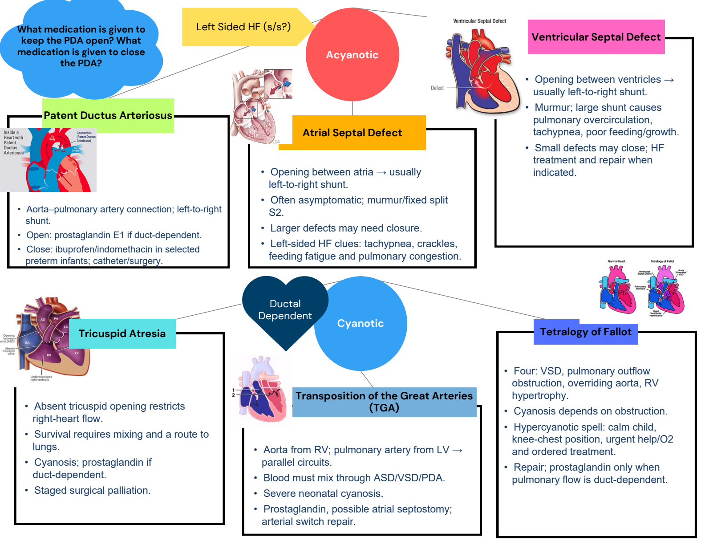
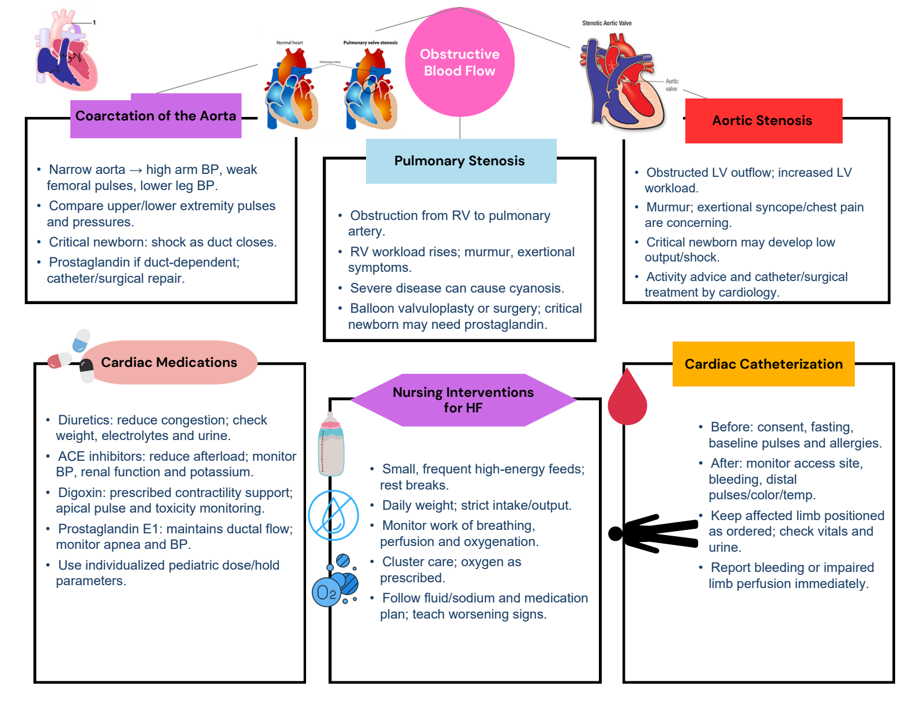
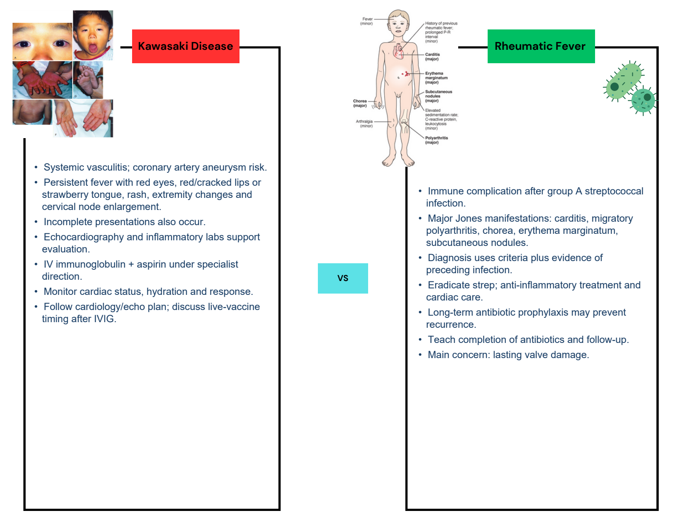

Completed maps with every original diagram. Switch to the original for blank practice.
1 / 3 Congenital defects: pulmonary flow and mixing
Completed map · original artwork + added blue notes Completed study notes · suggested additions
PDA and medications Aorta–pulmonary artery connection; left-to-right shunt. Open: prostaglandin E1 if duct-dependent. Close: ibuprofen/indomethacin in selected preterm infants; catheter/surgery. ASD Opening between atria → usually left-to-right shunt. Often asymptomatic; murmur/fixed split S2. Larger defects may need closure. Left-sided HF clues: tachypnea, crackles, feeding fatigue and pulmonary congestion. VSD Opening between ventricles → usually left-to-right shunt. Murmur; large shunt causes pulmonary overcirculation, tachypnea, poor feeding/growth. Small defects may close; HF treatment and repair when indicated. Tricuspid atresia Absent tricuspid opening restricts right-heart flow. Survival requires mixing and a route to lungs. Cyanosis; prostaglandin if duct-dependent. Staged surgical palliation. Transposition of great arteries Aorta from RV; pulmonary artery from LV → parallel circuits. Blood must mix through ASD/VSD/PDA. Severe neonatal cyanosis. Prostaglandin, possible atrial septostomy; arterial switch repair. Tetralogy of Fallot Four: VSD, pulmonary outflow obstruction, overriding aorta, RV hypertrophy. Cyanosis depends on obstruction. Hypercyanotic spell: calm child, knee-chest position, urgent help/O2 and ordered treatment. Repair; prostaglandin only when pulmonary flow is duct-dependent. Original selectable text Exact extraction; text embedded inside pictures remains in the full-size original visual.
Acyanotic
Ventricular Septal Defect
Left Sided HF (s/s?)
Cyanotic
Tricuspid Atresia Tetralogy of Fallot
Atrial Septal Defect
Patent Ductus Arteriosus
What medication is given to
keep the PDA open? What
medication is given to close
the PDA?
Ductal
Dependent
Transposition of the Great Arteries
(TGA)
2 / 3 Obstruction, heart failure and procedures
Completed map · original artwork + added blue notes Completed study notes · suggested additions
Coarctation of aorta Narrow aorta → high arm BP, weak femoral pulses, lower leg BP. Compare upper/lower extremity pulses and pressures. Critical newborn: shock as duct closes. Prostaglandin if duct-dependent; catheter/surgical repair. Pulmonary stenosis Obstruction from RV to pulmonary artery. RV workload rises; murmur, exertional symptoms. Severe disease can cause cyanosis. Balloon valvuloplasty or surgery; critical newborn may need prostaglandin. Aortic stenosis Obstructed LV outflow; increased LV workload. Murmur; exertional syncope/chest pain are concerning. Critical newborn may develop low output/shock. Activity advice and catheter/surgical treatment by cardiology. Cardiac medications Diuretics: reduce congestion; check weight, electrolytes and urine. ACE inhibitors: reduce afterload; monitor BP, renal function and potassium. Digoxin: prescribed contractility support; apical pulse and toxicity monitoring. Prostaglandin E1: maintains ductal flow; monitor apnea and BP. Use individualized pediatric dose/hold parameters. Nursing interventions for HF Small, frequent high-energy feeds; rest breaks. Daily weight; strict intake/output. Monitor work of breathing, perfusion and oxygenation. Cluster care; oxygen as prescribed. Follow fluid/sodium and medication plan; teach worsening signs. Cardiac catheterization Before: consent, fasting, baseline pulses and allergies. After: monitor access site, bleeding, distal pulses/color/temp. Keep affected limb positioned as ordered; check vitals and urine. Report bleeding or impaired limb perfusion immediately. Original selectable text Exact extraction; text embedded inside pictures remains in the full-size original visual.
Obstructive
Blood Flow
Coarctation of the Aorta
Pulmonary Stenosis
Aortic Stenosis
Cardiac CatheterizationCardiac Medications
Nursing Interventions
for HF 3 / 3 Acquired inflammatory cardiac conditions
Completed map · original artwork + added blue notes Completed study notes · suggested additions
Kawasaki disease Systemic vasculitis; coronary artery aneurysm risk. Persistent fever with red eyes, red/cracked lips or strawberry tongue, rash, extremity changes and cervical node enlargement. Incomplete presentations also occur. Echocardiography and inflammatory labs support evaluation. IV immunoglobulin + aspirin under specialist direction. Monitor cardiac status, hydration and response. Follow cardiology/echo plan; discuss live-vaccine timing after IVIG. Rheumatic fever Immune complication after group A streptococcal infection. Major Jones manifestations: carditis, migratory polyarthritis, chorea, erythema marginatum, subcutaneous nodules. Diagnosis uses criteria plus evidence of preceding infection. Eradicate strep; anti-inflammatory treatment and cardiac care. Long-term antibiotic prophylaxis may prevent recurrence. Teach completion of antibiotics and follow-up. Main concern: lasting valve damage. Original selectable text Exact extraction; text embedded inside pictures remains in the full-size original visual.
Kawasaki Disease Rheumatic Fever
VS